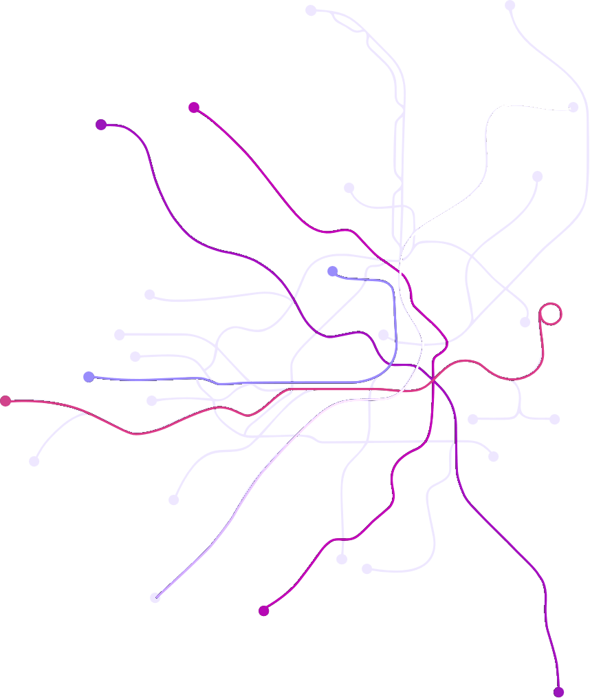

Techorama 2026 · Room 13 · Tue 27 Oct
Aspireify your app in an hour
Maddy Montaquila · Principal PM, Aspire @ Microsoft
Tommaso Stocchi · Cloud Solution Architect, Microsoft
Who we are

Maddy Montaquila
Principal PM, Aspire @ Microsoft
@maddymontaquila

Tommaso Stocchi
Cloud Solution Architect, Microsoft
@tommasodotNET
Aspireify
/ə-ˈspī-ər-i-ˌfī/ verb
To add Aspire orchestration to an existing app stack so it becomes easier to run, observe, configure, and deploy.
Usually involves connecting services, dependencies, environment variables, cloud resources, and developer workflows into one cohesive Aspire-powered app model.
Example
“We Aspireified our app so the API, frontend, database, cache, and worker all start from one place.”
Related forms
Aspireified adj. — an app orchestrated by Aspire
Aspirification noun — the process of Aspireifying a stack

Modern apps are like being in a big city without a map
Env
Frontends
Backends
Services
Observability
Agents + AI
Manifests + scripts
Editor / IDE
Deploy handoff
Complex dev, complex deploy
Dev loop
- Impossible to “clone and run”
- No easy way to add new services
- Local dev doesn’t reflect the real system
- Coding agents can’t see the whole app
Deployments
- Fragile, always-changing assets
- Painful handoffs for architecture changes
- “Only in prod” observability
- Configuration drift
What is Aspire?
Aspire
is
an
agent-ready,
code-first
tool
to
compose,
debug,
and
deploy
any
distributed
app.
Any language. Any cloud. No rewrites.
Four pieces you’ll see in the demo
AppHost
The code-first map of your app: every service and how they connect. C# or TypeScript.
Integrations
100+ packages for databases, caches, queues, AI and clouds. Opinionated by default.
Dashboard
Logs, traces, metrics and resources in one place — plus an MCP server for agents.
CLI
One agent-ready control plane to create, run and deploy the whole thing.
Live
Demo
Starting point: a “simple” bingo app
CLI cheat sheet
Install: get.aspire.dev
| Command | What it does |
|---|---|
| aspire init | Add an AppHost to an existing app |
| aspire new | Start a new app from a template |
| aspire add | Search for and add an integration |
| aspire run | Run the AppHost, every resource and the dashboard |
| aspire start --isolated | Run in the background on random ports (worktrees, agents) |
| aspire ps / stop --all | List or stop running AppHosts |
| aspire publish / deploy | Generate deployment assets, or deploy directly |
| aspire doctor | Check your environment is ready |
Writing the AppHost
What we just did
One command to clone and run the whole app
One model of every service, in code you can review
One dashboard for logs, traces, metrics and health
A dev loop with your team’s commands built in
An app agents understand — and can hand off to deploy
Your next hour
How Aspireified do you want to get?
If I reformatted my machine today, what would it take to run my app?
What do new teammates always get stuck on?
How much of my .env is service wiring vs. real secrets?
Which dev scripts belong in the AppHost as commands?
Do I work across worktrees and need isolated ports?
Which parts of my app should be able to run on their own?
“But what about production?”
Keep your deployments
Use Aspire just for the dev loop. Your pipelines don’t have to change.
A model, not a runtime
The AppHost describes your app. It isn’t something you run in prod.
Publish for any target
Generate Docker Compose, containers and cloud assets — or deploy with the CLI.
Hand over real artifacts
Pre-built containers and Compose files your ops team can test end to end.
Resources
Docs
Install the CLI
Integrations
Agent skills
Community
Today’s demo
Thank you
Go Aspireify something this afternoon — and tell us how it went.
Docs
aspire.dev
Socials
@aspiredotdev
Maddy
@maddymontaquila
Tommaso
@tommasodotNET
Please rate this session in the Techorama app.